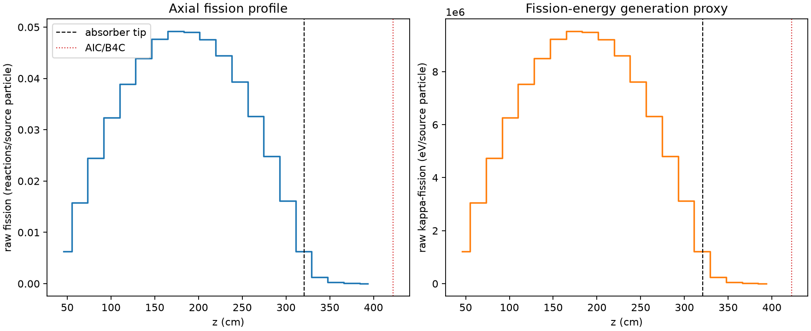
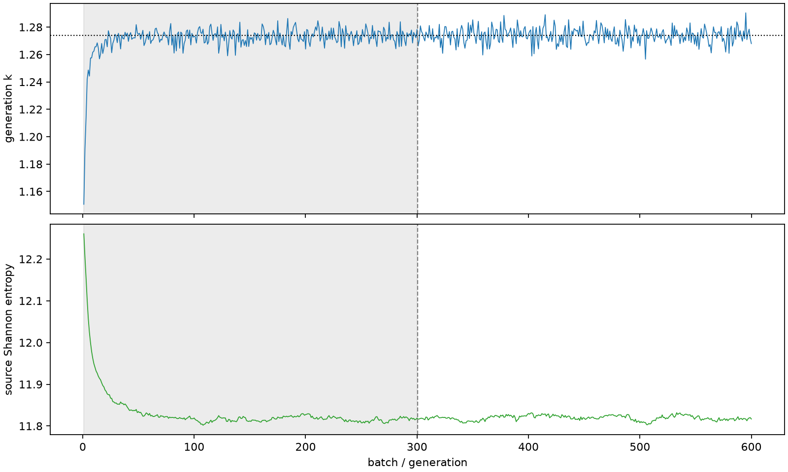

| field | value |
|---|---|
| experiment | V2-STAGE_128_OGRENCI_01-0011 |
| k | 1.2737627626019359 |
| MC standard error | 0.00018957224787911949 |
| seconds | 996.4308081189956 |
| acceptance | not_assessed |
| convergence | review_required |
Completed is output integrity only; physical and statistical review required. Zero tallies do not prove zero production or zero uncertainty.
| diagnostic | value |
|---|---|
| geometric fuel voxels | 5280 |
| zero fission tally voxels | 0 |
| low signal fuel voxels | 358 |
| low signal fission share | 6.892104940487213e-05 |
| low signal kappa share | 6.894516180972266e-05 |
| important fission share | 0.9500092527976649 |
| previous filter included | 4922 |
| duration estimate s | 1562.5173488400023 |
| actual minus estimate s | -566.0865407210067 |
| fission relative MC error | statistics |
|---|---|
| all_geometric_fuel | {"voxels": 5280, "positive_mean_voxels": 5280, "zero_mean_voxels": 0, "undefined_relative_error_voxels": 0, "median": 0.01028888159972794, "p95": 0.2597715101729358, "maximum": 0.6268685856714806} |
| low_signal | {"voxels": 358, "positive_mean_voxels": 358, "zero_mean_voxels": 0, "undefined_relative_error_voxels": 0, "median": 0.3480920675778387, "p95": 0.5113605111780062, "maximum": 0.6268685856714806} |
| important_95pct | {"voxels": 3491, "positive_mean_voxels": 3491, "zero_mean_voxels": 0, "undefined_relative_error_voxels": 0, "median": 0.008685960309674938, "p95": 0.013208240734999493, "maximum": 0.015411456461824785} |
| outside_previous_filter | {"voxels": 358, "positive_mean_voxels": 358, "zero_mean_voxels": 0, "undefined_relative_error_voxels": 0, "median": 0.3480920675778387, "p95": 0.5113605111780062, "maximum": 0.6268685856714806} |
| kappa_fission relative MC error | statistics |
|---|---|
| all_geometric_fuel | {"voxels": 5280, "positive_mean_voxels": 5280, "zero_mean_voxels": 0, "undefined_relative_error_voxels": 0, "median": 0.010277306638900507, "p95": 0.25940398352220306, "maximum": 0.6260594785350362} |
| low_signal | {"voxels": 358, "positive_mean_voxels": 358, "zero_mean_voxels": 0, "undefined_relative_error_voxels": 0, "median": 0.34749558260343916, "p95": 0.5107854190889958, "maximum": 0.6260594785350362} |
| important_95pct | {"voxels": 3491, "positive_mean_voxels": 3491, "zero_mean_voxels": 0, "undefined_relative_error_voxels": 0, "median": 0.008677117587008896, "p95": 0.013194816537410954, "maximum": 0.015393481277752424} |
| outside_previous_filter | {"voxels": 358, "positive_mean_voxels": 358, "zero_mean_voxels": 0, "undefined_relative_error_voxels": 0, "median": 0.34749558260343916, "p95": 0.5107854190889958, "maximum": 0.6260594785350362} |
| axial bin | fission share | kappa-fission share |
|---|---|---|
| 1 | 0.011987653686622945 | 0.011988141304291277 |
| 2 | 0.03025054165009185 | 0.030250508792651287 |
| 3 | 0.04704589027403293 | 0.047045514005455216 |
| 4 | 0.06216694652965063 | 0.062166661463149184 |
| 5 | 0.0746653698242756 | 0.07466505039692456 |
| 6 | 0.08446016214340278 | 0.08446009983370238 |
| 7 | 0.09155812415146278 | 0.09155783896726956 |
| 8 | 0.09447408359107715 | 0.09447365031488944 |
| 9 | 0.09427698387469932 | 0.09427694518338713 |
| 10 | 0.09148672678814664 | 0.0914864465016481 |
| 11 | 0.08538589002089972 | 0.08538550485714168 |
| 12 | 0.07567529134702349 | 0.07567508154743263 |
| 13 | 0.06274656392621022 | 0.06274654324156248 |
| 14 | 0.047719868544483096 | 0.047719863060770355 |
| 15 | 0.030963608618380083 | 0.030963705968454932 |
| 16 | 0.012101257320407899 | 0.012102339266320532 |
| 17 | 0.0023442960570821394 | 0.0023451081856920675 |
| 18 | 0.0005446434809366734 | 0.000544840631083027 |
| 19 | 0.00012150884392797135 | 0.00012155645292447563 |
| 20 | 2.458932718621862e-05 | 2.460002524955602e-05 |
Histories include the inactive-to-active transition at batch 300. kappa-fission approximates fission energy production, not total heat deposition.

